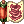

Ketalar's Magic Oboro guide
| Oboro | |||||||||||||||||||
|---|---|---|---|---|---|---|---|---|---|---|---|---|---|---|---|---|---|---|---|
| Job Base: | Ninja | ||||||||||||||||||
| Written By: | Ketalar | ||||||||||||||||||
| |||||||||||||||||||
Overview
Helloo, i'm Ketalar and in this guide i'll focus in the Oboro class, in a magic build only. Mostly cause it's more likely to make this become updated for only one build and cause it's the build that i play more. Note that this is a PVM guide. This guide works for Kagerou too, except for the Oboro only skills that i find better for this build(it's only one :p), and for more builds, there's more guides in the class guides page. This build has a great potential and there's good options for starters too, it doesn't need anything expensive and good gear needed can be easily farmed.
You can contact me at Ketalar#8368 for questions or suggestions, tag me in NovaRO Discord, at #wiki.
Stats
Basically, each stat here has a easy explanation.
- STR - Here nothing is recommended, except if you're going just to farm, str for this build has only weight purpose so i leave it in 1, and you can use Gym Pass if weight is really bothering you.
- AGI - Agi is a important factor in this build, mostly for ASPD, after we get instant cast, it allow us to cast more skills in less time, increasing DPS. Besides that, it's useful for the flee that it provides. Scale it depending on how fast you can cast, if you have insta cast already, so a high value is good.
- VIT - I don't focus on vit, even that a high value is needed for stun immunity(100 with bonus), thanks to
 , after a physical attack, your character will not receive the damage and move back away from the enemy, it's more likely that you'll not get stun, it's still possible but don't worry about it. Any low to no value here is recommended.
, after a physical attack, your character will not receive the damage and move back away from the enemy, it's more likely that you'll not get stun, it's still possible but don't worry about it. Any low to no value here is recommended. - INT - Int is one of main stats of this build, together with agi and dex, but, the priority order is really Dex/Getting insta cast > Agi/Getting good ASPD and then INT, mostly cause, DPS means damage per second, so the first two stats will allow us to give more damage in less time, and then int will increase this damage. Basically all points that aren't in agi and dex, a minimum ~90 is good.
- DEX - Dex is the first stat to aim for, as it reduces our cast time, a high value here is needed, even dex foods are recommended.
- LUK - Basically no value for us as we have another priorities, unless you wanna share int points with luk as luk gives matk too but i would just leave it 1 too.
Skills
There's only one Oboro only skill that directly helps this build, i'll talk about it first and then go to general skills.
Oboro Skills
Oboro has 3 exclusive skills, Distorted Crescent is a good buff but sometimes hard to apply until you get the practice, Moonlight Fantasy is almost impossible to apply in a pvm situation and Ominous Moonlight can be used in pvm but doesn't apply to boss monsters and it's kinda limited cause of this.
| Skill | Notes |
|---|---|
 Distorted Crescent Lv 5 Distorted Crescent Lv 5
|
This skill is a buff, that can be used in offensive purposes, but for us, we'll only use it as a buff, if our SP is odd when we use it, our MATK will decrease and when it is even, it will increase, basically you need to be fast and control your SP regen to do this.
|
 Moonlight Fantasy Lv 3 Moonlight Fantasy Lv 3
|
This skill isn't a big deal in PVM as you can't use it in monsters, actually it's possible to duel your sura to try to increase hp, but as it has random effects, it's better to not use it, would be a situational crazy thing. |
Main Skills
These skills are the best ones and both Kagerou and Oboro has them, some are from the Ninja skill tree.
| Skill | Notes |
|---|---|
 Flaming Petals Lv 10 Flaming Petals Lv 10
|
This is your main offensive spell, and sadly, it's not AOE, it's a fire magic attack that has 0% after cast delay with 10 Fire-Charms increase this skill damage by 200%. |
 Freezing Spear Lv 6~10 Freezing Spear Lv 6~10
|
A water alternative to the first skill, it is weaker than Flaming Petals, but you need it when fighting fire creatures, it inflicts 70% water magic damage, starting with 3 hits and each level increases it by 1, like before, so it will be 12 hits at level 10 and the cast time increases 0.7 per level.
This skill gets 50% more damage with 10 Ice-Charms. |
 Wind Blade Lv 3~7 Wind Blade Lv 3~7
|
Another skill that you'll only use if you have elemental disadvantage with both Flaming Petals and Freezing Spear too, it gives 150% wind magic damage in each blade, however, some levels in this skill only changes the sp use.
With 10 Wind-Charms this skill damage increase in 200%. |
 16th Night Lv 5 16th Night Lv 5
|
One of your best skills, keep this active - it's a buff that reduces your fixed cast time in 100% and your variable cast time in 50%, note that it stacks multiplicatively with another reductions, so 50% from this skill and 50% variable cast reduction from gears, will result in 75% reduction, not 100%.
It has 60 seconds cooldown, and the duration in Lv3 is 60 seconds, so it's the min level for this skill, but i go for Lv5 as it gives 90sec cooldown duration and we have another buff to keep. |
 Fire Charm Lv 1 Fire Charm Lv 1
|
These charms are a kind of buff, they have about 300 seconds duration, and will increase the magic damage of some spells of its element, you need to buy them(there's a npc in prontera) to use, and cast 10 at a time.
|
 Cicada Skin Shed Lv 5 Cicada Skin Shed Lv 5
|
A good skill to keep us alive, at level 5 it does 3 dodges of incoming attacks, after dodging, it pushes you back 7 cells, you must have it. |
|  Blaze Shield Lv 7 | This skill lasts 20 seconds or until doing the total amount of strikes, it is really good to trigger stuff like Runaway Magic. Each strike gives 50% fire magic damage, it starts with 5 strikes and every 2 levels it increases one, so 9 in Lv9, different from some skills above, the cast time starts with 6 seconds and decrease at each skill level by 0.5s.
With 10 Fire-Charms this skill damage increases in 50%. It requires a Flame Stone that can be bought in the Ninja Supplier NPC, see Gameplay in this guide below. |
 Exploding Dragon Lv 5 Exploding Dragon Lv 5
|
One of your few AOE skills. It gives 900% fire magic damage at lv5, consuming one Flame Stone(See Ninja Supplier below where you can buy it).
This skill damages increases in 150% with 10 Fire-Charms. |
 Pure Soul Lv 5 Pure Soul Lv 5
|
Pure Soul is your bread and butter, will regen your hp completely and half your sp in 10 seconds, but you're immobilized in this time,you can't walk but can use skills and skills that move yourself,
it uses 100sp so use it before it's too late, the CD is short so use it always when you have time for it and need, even if need only a bit. |
 Mirror Image Lv 0~5 Mirror Image Lv 0~5
|
It's a good skill to dodge(any physical damage) but it has a lot of requirements, you still can get it if you want. You need to be using  Ninja Aura to cast and it consumes a Shadow Orb(again just check the NPC Ninja Supplier below). Ninja Aura to cast and it consumes a Shadow Orb(again just check the NPC Ninja Supplier below).
|

Another Skills
| Skill | Notes |
|---|---|
 Release Ninja Spell Lv 1 Release Ninja Spell Lv 1
|
Use all charms to deal MATK * (200 * charm quantity) * (Base Level / 100)% damage, the element is the same as the element of the charms used. |
 Snow Flake Draft Snow Flake Draft
|
Ice AOE that scales good with charms. It's 350% water magic damage at level 5 without charms, it does damage around you and has a chance of giving the frozen status to enemies, each cast uses a Ice Stone(see Ninja Supplier below).
10 Ice-Charms will increase this skill damage by 250%. |
 Cast Ninja Spell Lv 1 Cast Ninja Spell Lv 1
|
Creates a 5x5 in the ground that inflicts status depending in the charms
|
Cast Time

The general Variable Cast formula for 0 cast here is:
DEX x 2 + INT = 530
Note that dex is multiplied by 2, so its a important stat when we talk about cast time.
As we saw in Skills, Oboro can use 16th Night  that will reduce the fixed cast time in 100%, and the variable cast time in 50%,
so we are more likely to reach this, but keep in mind that 16th Night stacks multiplicatively with another reductions.
that will reduce the fixed cast time in 100%, and the variable cast time in 50%,
so we are more likely to reach this, but keep in mind that 16th Night stacks multiplicatively with another reductions.
It's really good to use stat foods there, both int and dex foods will help in casting time.
 Hwergelmir's Tonic(from Slot Machine) gives DEX +10, you can use it together with
Hwergelmir's Tonic(from Slot Machine) gives DEX +10, you can use it together with  Siroma Iced Tea, that gives DEX +20 for a total of DEX +30.
Siroma Iced Tea, that gives DEX +20 for a total of DEX +30.
For INT you can use  Dragon Breath Cocktail(from Slot Machine) for INT +10 and
Dragon Breath Cocktail(from Slot Machine) for INT +10 and  Warg Blood Cocktail for INT +20, for a total of INT +30.
Warg Blood Cocktail for INT +20, for a total of INT +30.
Equipment
After all, Kagerou/Oboro has a limited amount of equipments for the magic build.

Headgear
| Item | Type | Way to obtain | Notes |
|---|---|---|---|
 Wickebine's Black Cat Ears [0] Wickebine's Black Cat Ears [0]
|
Upper | Custom Headgear Quests | 5% chance to ignore magic defense when attacking for 5 seconds, for me, it's the best in slot, or at least, the best hat that we have for now, some monsters and bosses got a really high MDEF, so ignoring it is the way to go.
We are more likely to trigger the 5% chance as we can spam our skills really fast. |
 Skull Cap [1] Skull Cap [1]
|
Upper | Cash Shop | Replacing Wickebine's Black Cat Ears is not a good thing(unless you own some vesper cards), but this hat has one slot and can give good matk %, it's still "acceptable" for the build, but i don't recommend it, matk/int is our last focus(after cast and aspd) and you should use anything else than Wickebine's only if you have another way to deal with creatures MDEF. |
 Drooping Neko Crew [1] Drooping Neko Crew [1]
|
Upper | Summer festival | Magic damage ignores 5% of MDEF, the amount increase 1% per refine, in +7 it increases 5% and gives MATK +2%, in +9 it gives MATK +5%. Good way to ignore magic defense too, and it gives a good % matk. |
 Vibrant Rose [1] Vibrant Rose [1]
|
Upper | Horror Toy Factory | This hat gives a flat MATK +20 and MATK +5 per refine, when attacking with magic it can cast Soul Drain Lv10, but the same thing as above applies here. |
 Celine's Ribbon [1] Celine's Ribbon [1]
|
Upper | Horror Toy Factory | DEX +3 MATK +40, and every refine increases MATK +7, it's a big flat matk boost. |
 Black Frame Glasses [1] Black Frame Glasses [1]
|
Middle | Cash Shop | A good way to have a card slot if you're using Wickebine, well good if you're using any hat, a cheap alternative for this is the Monocle. |
 Rainbow Scarf [0] Rainbow Scarf [0]
|
Bottom | Cash Shop | A good +1% matk and +1 int. |
 Well-Chewed Pencil [0] Well-Chewed Pencil [0]
|
Bottom | Cash Shop | +2 dex to help your cast. |
| Card | Monster drop | Gives a bit of flat matk and raises your fire magic damage in 5%. | |
| Card | Monster drop | Gives Int +2 and chance to reduce variable cast time in 50% when using magic attacks. | |
| Card | Monster drop | +25 flat matk. | |
 Darklord Essence Concentration3 Darklord Essence Concentration3
|
Card | Demon God Instance | Gives a good DEX +4. |
Armor
| Item | Type | Way to obtain | Notes |
|---|---|---|---|
 Flattery Robe [1] Flattery Robe [1]
|
Armor | Honor Token | +150 MATK if you're level 140 or higher, best in slot, in +7 you can put enchants, aim for dex if you don't have insta cast, plus it gives a really good flat matk boost, a min +10 dex here is really good.
|
 Abusive Robe [1] Abusive Robe [1]
|
Armor | Honor Token | Not our focus, but you can switch for it to get Attention Concentrate, sadly only Lv 1 so would boost 3% of base(with job bonus) agi and dex for one minute. |
 Airship's Armor [1] Airship's Armor [1]
|
Armor | Airship Assault | A basic armor if you can't afford the flattery robe, all stats +1, +10MDEF, and some HP/SP. |
 Ferlock's Armor [0] Ferlock's Armor [0]
|
Armor | Airship Assault | Another basic armor for starters, all stats +1, like Airship Armor but gives more HP/SP if it has a good refine. |
 Sarah Combat Robe [1] Sarah Combat Robe [1]
|
Armor | Sarah and Fenrir | If it has a good refine you can get flat matk from this when using spells. A chance of increasing MATK by 8*refine level when using magic attacks, don't bother with less than +7. |
| Card | Monster drop | A good defensive card for instances like OGH. | |
| Card | Monster drop | +10% hp for general survival. | |
| Card | Monster drop | Gives +5% matk. | |
| Card | Monster drop | Gives neutral resistance, without "side effects", but you get more damage from ghost element. | |
| Darklord Essence Concentration3
|
Card | Demon God Instance | Gives a good DEX +4. |

Weapons
| Item | Type | Way to obtain | Notes |
|---|---|---|---|
 Crimson Dagger [2] Crimson Dagger [2]
|
Weapon | Monster drop | One of the best weapons for the first hand, it needs to be +15 to beat another daggers matk. Don't bother about its element, we're using magic attacks.
This weapon gives (Refine * Refine) / 2 MATK, plus the matk from the normal refine. At +15, it will be: ((15 * 15) / 2) + 75 (each refine in a Lv3 weapon gives 5 matk), so 187,5 MATK. |
| Weapon | Monster drop | This can be the best in slot, as it's Lv4 it will give more matk, plus the default +50matk that this dagger got, it has 1 slot, something that isn't a real problem here, plus you can get good enchants.
Same as before, but it's a Lv4 weapon and has +50 MATK, so the formula would be 50 + (15 * 15 / 2) + 105(each refine here gives 7 matk), so 267,5 MATK. | |
 Mikatsuki [1] Mikatsuki [1]
|
Weapon | Monster drop | Affordable good starter weapon, gives 120 matk, more than Bazerald, 5% reduction in sp consumption and casting time. |
 Fortune Sword [0] Fortune Sword [0]
|
Weapon | Monster drop | Good when luring creatures or tanking, gives +20 perfect dodge. |
 Asura [3] Asura [3]
|
Weapon | Monster drop | Easy to get for starters. MATK +50. |
 Bazerald [0] Bazerald [0]
|
Weapon | Monster drop | Same as above, gives +5 int and 105matk, plus can be enchanted(better with Spell enchants). |
 Infinity Dagger [1] Infinity Dagger [1]
|
Weapon | Infinite Space | Gives a basic 100 matk, but it can get nice enchants, best scenario would be two Spell 8. |
| Card | Monster drop | MATK +5, if the dagger is +10 or higher MATK +20, if 14 or higher, MATK +20 and if equipped with Shotgun Buffalo Bandit Card, magical damage in small size enemies +15%. That's total 45 flat matk | |
| Card | Monster drop | +10% magic damage in small size enemies. | |
| Card | Monster drop | Gives +10% damage to undead creatures, mostly end game instances has them. | |
| Card | Monster drop | +5% magic damage agaisnt brute and undead monsters, mostly go well with the combo, but the another card goes in the shield. | |
| Card | Monster drop | A dope +10% matk, and 1% chance of casting Lv 5 Killing Cloud when using magic attacks and our job can spam a lot of magic attacks.
It is not a easy card to get, but the more the better. | |
| Card | Monster drop | 10% magic damage in insects, good in OGH maggots and Faceworm. | |
| Card | Monster drop | 10% magic damage in demon creatures. | |
| Card | Monster drop | Same as Ancient Tree card but for demihumans, really useful in GMT. | |
| Darklord Essence Concentration3
|
Card | Demon God Instance | Gives a good DEX +4. |
Second hand
Basically all cards from the "Weapon" list applies here.
| Item | Type | Way to obtain | Notes |
|---|---|---|---|
 Main Gauche [4] Main Gauche [4]
|
Weapon | Monster drop | For optimal damage, having only cards in the second hand can be better. |
Shield options
I really recommend using another dagger, but there's some shields for defensive reasons.
| Item | Type | Way to obtain | Notes |
|---|---|---|---|
 +7/+9 Immune Shield [1] +7/+9 Immune Shield [1]
|
Shield | Monster Hunter | A good neutral resistance shield. |
 Valkyrja's Shield [1] Valkyrja's Shield [1]
|
Shield | Monster drop | Good general shield and has a lot of elemental resistance(+20% to water, fire, undead and shadow), nice after the matk patch. |
| Stone Buckler [1] | Shield | Monster drop | Good for newbies, reduces damage from large sized monsters by 5%. |
| Crescent Armguard [1] | Shield | Quests | Nice delay reduction per refine, a good combo if you use a garment with Marsh Arclouse card. |
| Card | Old Glast Heim | -25% damage taken from medium and large sized monsters, and +20 DEF. | |
| Card | Monster drop | -15% damage taken from small, medium and large sized monsters, good all around. | |
| Card | Monster drop | Combo with | |
| Card | Monster drop | -25% damage taken normal monsters, +50% damage received from boss monsters, a good card if you switch to another shield when fighting bosses. | |
| Card | Monster drop | Defensive card agaisnt boss monsters, but you need to switch to another shield when fighting normal monsters. |
Garments
| Item | Type | Way to obtain | Notes |
|---|---|---|---|
 Giant Snake Skin [1] Giant Snake Skin [1]
|
Garment | Faceworm Nest | A high refine one is good, but at +12 we would only need the ASPD bonus from it, for stats, the priority is dex/int and agi if you have insta cast and lack in aspd. |
 Ferlock's Cloak [1] Ferlock's Cloak [1]
|
Garment | Airship Assault | At +9 it will decrease the cast time in 30%, but remember that 50% decrease from 16th Night and 50% from equipment, would be 75%, not 100%, i really think that a good GSS is better. |
 Cloak of Airship [1] Cloak of Airship [1]
|
Garment | Airship Assault | Nothing really special, just a cheap good alternative for anything here, -20% floating cast(from equipment), and 10% neutral tolerance. |
 +7/+9 Heroic Backpack [1] +7/+9 Heroic Backpack [1]
|
Garment | Monster Hunter | As this item is good for so many classes, it's acceptable to use it in this build, we would only use the matk and aspd bonus. MATK +30 and ASPD +8% in +7, MATK +50, ASPD +1 and ASPD +8% in +9. |
| Card | Monster drop | 15% neutral resistence, and the magic fire damage will increase in +3% at each refine, a really good damage boost in Flaming Petals and another fire skills if you card it in a ~+10 GSS. | |
| Card | Monster drop | Gives a good flat matk. | |
| Card | Monster drop | A kinda cheap defensive card, +20% neutral resistance. | |
| Card | Monster drop | Every 10 base int: MATK +3 and ASPD +1%. If base int is 120 or higher: MATK +40. A good card for this build. |
Shoes
| Item | Type | Way to obtain | Notes |
|---|---|---|---|
 Temporal Int Boots [1] Temporal Int Boots [1]
|
Shoes | Temporal Boots | If int is 120 or higher, MATK +60. As we don't need the dex one, the flat matk boost from this boots really help. Try to aim for Spell/Runaway Magic. |
 Temporal Agi Boots [1] Temporal Agi Boots [1]
|
Shoes | Temporal Boots | Every 3 refines in this will give 3% attack speed, plus it will get low price with the enchants above. |
 Temporal Dex Boots [1] Temporal Dex Boots [1]
|
Shoes | Temporal Boots | Every 3 refines will give you +3 dex! |
 Enhanced Variant Shoes [1] Enhanced Variant Shoes [1]
|
Shoes | Gold coins | A cheap defensive option, if you can't afford anything else, the normal Variant Shoes are okay too. +12% HP/SP. |
| Card | Monster drop | Agi +1 and +10% HP. | |
| Card | Monster drop | Cast -3%, Wind Blade, Freezing Spear, and Flaming Petals damage +5%, a good card, would be better if it was MATK % instead of 3% cast reduction. | |
| Card | Monster drop | MATK +3%, magical fire damage +5%, really good as it boosts our matk and fire damage for our Flaming Petals. | |
| Card | Monster drop | Need to have a shoes +9 or higher, it gives +10% in HP and in SP too. | |
| Card | Monster drop | Vit +1 and +10% HP. | |
| Card | Monster drop | A offensive option, can give a good +8% magic damage if the boots is +7. |
Accessories
| Item | Type | Way to obtain | Notes |
|---|---|---|---|
 Alchemy Glove [1] Alchemy Glove [1]
|
Acessory | Monster drop | +10% fire damage, a good and cheap option, can even be the best in slot but sometimes the autocast can annoy.
New note on this: The autocast can stop you from dealing a lot of damage sometimes. |
 Glove [1] Glove [1]
|
Acessory | Monster drop | Basic acessory that gives +1 dex, but Alchemy Glove can be easier to get. |
| Pendant of Harmony [0] | Acessory | Nightmarish Jitterbug | +6% matk, but sadly no slot, what makes it really bad, anything without slot is bad cause we can't put a Mavka card in it, unless your focus is not Flaming Petals. |
| Pendant Of Maelstrom [1] | Acessory | Nightmarish Jitterbug | +6% matk/atk, all stats +1, sometimes it casts maelstrom when you receive magic attacks. |
 Buwaya Agimat Tattoo [0] Buwaya Agimat Tattoo [0]
|
Acessory | Pintados Festival | Again only if you don't need the slot, from this you would use only the +7% matk. |
 Int Glove [1] Int Glove [1]
|
Acessory | Stat Gloves | MATK +1% if your base int is 110 or higher, plus flat MATK +1 per 10 int points. |
 Broken Heart [1] Broken Heart [1]
|
Acessory | Horror Toy Factory | Mostly cause of its enchants, 3 enchants and you can get any stat except luk from 1~4, so aim for 3x Dex 4 enchants. |
 Hero Ring [0] Hero Ring [0]
|
Acessory | Bios Island/Morse's Cave | No slot but can be enchanted, you can get a +5 int / +5% matk, but it's hard to. |
 Magic Intensifier Ring [1] Magic Intensifier Ring [1]
|
Acessory | Geffen Magic Tournament | Gives MATK +5%, it can be enchanted too, best would be 7% Variable Cast Reduction, ASPD +5% or Magic Attack 3% for the first enchant and same ones for the second, just fit your needs. |
| Card | Monster drop | The best one as it will boost your Flaming Petals in +20% fire magic damage, it's 30% in an alchemy glove and you can use two. | |
| Card | Monster drop | Max SP -1% but flat MATK +20. | |
| Card | Monster drop | Gives DEX +3. | |
| Card | Monster drop | I don't think that it's worth, but good to know about this card, +5% long ranged defense. | |
| Darklord Essence Concentration3
|
Card | Demon God Instance | Gives a good DEX +4. |
MVP Cards
These cards are only a reference, you don't need them for the build.
| Card | Notes |
|---|---|
| Weapon card with MATK +10%, 0.5 chance of inflicting Critical Wound in any target 11x11 cells around, Critical Wound inflicts 100% Physical Damage and place a debuff in healing power, it would fit well with Crimson or Vicious Mind daggers as they has ATK in good refines too, the chance increases by 1% every 3 refines, so would be 5.5% in +15. | |
| Headgear card, it would be a waste of 70% Fixed Cast Time reduction, but it gives +50 MATK and +5 MATK for every refine. | |
| Wasting 50% damage in demihuman, but would give you +10% MATK in a footgear. | |
| Ignores MDEF of normal monsters, has side effects like slowing your cast time in 2x and killing your sp regeneration. | |
| Headgear card that ignores 30% of boss monsters MDEF. |
Shadow Gears
Shadow Gears can be obtained in Monster Hunter, they equip in the costumes area(but you can still use costumes, even the garment one) and each set gives different stats.
The recommended sets are DEX, that gives dex +5 and cast time -5%, agi for agi +5 and aspd +5% and int for int +5 and matk +5.
Pets
The bonus only applies when the pet is loyal, for more info see Pet System.
| Item | Notes |
|---|---|
| A good +3 int. | |
 Leaf Lunatic Leaf Lunatic
|
Magical damage agaisnt formless race monsters +6%, situational, race and element are different multipliers, so it goes well with the weapon cards. |
| Earth Deleter | AGI+3, ASPD +3%, it's good if you have insta cast and need ASPD. |
 Miyabi Doll Miyabi Doll
|
INT+1, variable cast time -3%, can help in cast time but not a lot, as it should stack multiplicatively with 16th Night.
|
| Am Mut
|
Matk +4%, a good % matk boost to increase your general damage. |
Builds
Stats
Before was said everything needed and the explanation of the stats, keep in mind that the best thing to do, is to balance your stats depending in your needs.
Starter Build
If you're using the basic items recommended here, and no end game gear, an approach like this is good:
- STR 1
- AGI 90
- VIT ~96
- INT 120
- DEX 120
- LUK 1
Still has some points, as a newbie, it can be hard to get instant cast, so we can bring more vit here. For end game builds, the stats need to be balanced by your needs, just follow the stats explanation in the guide start.
Skill Build
- Mostly main skills already has a recommended level said before, there's another useful skills so beside that ones, you can be free with your skill points.
- If you wanna get Mirror Image, you can use a skill tree like this:

- Note that exploding dragon is there for the often uses of the fire charm, you can sacrifice Mirror Image and its required skills to put more points in the magic branch, in general, you can adapt both ninja and oboro skills as you want, keeping the essential.
Strategy
- Focus on casting Flaming Petals after having all buffs set.
- Keep distance from mobs and keep in touch with Cicada Skin Shed dodges left.
Farming Tips

Basic tips to get zeny as a oboro! To make your life easier, first max your character using the leveling guide, then you can farm.
- If you're really just starting the game, you can get a small amount of zeny in Toy Factory, to buy the basics, but this if you're not maxed and can't handle another places.
- Between Juperos, Magma Dungeon 2 and Geffenia, Geffenia is better for us, as we don't have a good AOE skill and its more easy to survive.
- You can get a daily profit doing Ghost Palace, it's a easy instance that you can do solo.
- Charleston is a good easy instance for our job, Old Glast Heim too.
- You can do Banquet for Heroes dailies to get Honor Token, here you can get your Flattery Robe or get them to sell.
- You can do a Mins and auto follow you in some instances, in it, you would need dex.
More farming places
So if you don't like Geffenia or just got tired of grinding in the same place, there's more places to get zeny.
- Daily profit:
Mora Daily Quests can give a nice daily profit, you can get one WWS every 2 days, you need to do Mora Village quest first.
As said before, Banquet for Heroes if realized every day, can give a nice amount of zeny sometimes.
Ghost palace can be done to sell Thana Bows(as they sell faster).
- Places that rely on drop chance:
White Wing Suits - Farming WWS in Anubis at sphinx4, it's kinda bad as they sell for low but good if you're going to refine or wanna try your lucky.
 Crimson Bow - Farming Crimson Bow in Bio Lab 2, Thor Volc killing Bow Master or Owl Baron in Thanatos Tower 6, Kavach Icarus can be hard if you can't evade his attacks, Bow Master has only a few so you need to tp a lot but it drops another stuff too.
Crimson Bow - Farming Crimson Bow in Bio Lab 2, Thor Volc killing Bow Master or Owl Baron in Thanatos Tower 6, Kavach Icarus can be hard if you can't evade his attacks, Bow Master has only a few so you need to tp a lot but it drops another stuff too.
 Gold Scaraba Card - If you're able to!
Gold Scaraba Card - If you're able to!
 Outrageous Cookie Card - Same as above, but there's only a few tirant cookies.
Outrageous Cookie Card - Same as above, but there's only a few tirant cookies.
 Menblatt Card and
Menblatt Card and  Petal Card, these ones are in the same map and they sell fast.
Petal Card, these ones are in the same map and they sell fast.
 Angeling Card,
Angeling Card,  Deviling Card and
Deviling Card and  Ghostring Card - They have a really small drop rate and spawn, so i wouldn't try to "farm" these ones, but if you're feeling lucky...
Ghostring Card - They have a really small drop rate and spawn, so i wouldn't try to "farm" these ones, but if you're feeling lucky...
 Ygg Berry - Farming these in the last floor of Basilisk Dungeon can give some profit.
Ygg Berry - Farming these in the last floor of Basilisk Dungeon can give some profit.
Gameplay
- Remember that you can use First Aid to switch your SP from ODD to EVEN to use Distorted Crescent buff asap.

- You can use Distorted Crescent in allies too, it's better to get the party window, and use @showsp too.
- All stuff from this job can be bought in the npc Ninja Supplier in Prontera(@go 0).

- Always use all 10 charms for the skill that you're using, the damage boost is really needed and they last 300 seconds.
- In Sara's Memory you can get stats food that are needed for our class, mostly if you don't have insta cast, different stats food of the same stat can be used together.
- The formula for instant cast is: (dex*2 + int) = 530.
- Some skills like Flaming Petals will cast faster if you use a low level of the skill.
- In instances beware guys like
OGH Bloody Knight, it only receives 1/4 of fire damage and even switch its element to fire, some creatures has a lot of reduction.
Instances
So, let's see how our magic build can do in some instances. For all instances, a mins with magic strings and a sorcerer casting the Fire Insignia helps.
- Old Glast Heim(Normal/Hard):
Flaming Petals can pretty much do 200% damage in almost all stuff here, except for Bloody Knight and the bosses doesn't reduce our damage with resistances, a Bathory and Ancient Tree cards can really help here.
Party support is really needed.
- Charleston:
They don't have resistances too,  Hell Apocalypse Card can help in DPS for the last boss, pretty much a easy instance, just be sure to heal yourself from magic damage.
Hell Apocalypse Card can help in DPS for the last boss, pretty much a easy instance, just be sure to heal yourself from magic damage.
- Jitterbug:
This would take more time than needed, as we don't really have a really good AOE, it's still good if you have a lot of damage in our crappy AOEs or if you can damage really fast.
- Airship:
Not a lot to say here, it's a really easy instance.
Leveling
We don't need to rebirth, so our leveling is pretty easy!
Creatures weak to fire attacks: Payon Dungeon(For newcomers less than Lv30), Orcs(in gef_fild10, Lv 30~40+), Hodes(Lv ~55+), Mi Gao(Lv 70+), Moscovia Dungeon(For Lv80+), Stapo(Lv ~90+), Scaraba(Lv ~125+)
- Lv 1
- Use @go 0 to go to prontera, go down one map and kill some porings until you have enough level to become a Ninja, after that, do the Cautious Village quest, only that.
- Lv 84 - Lv 85
- Warper > Dungeons > Moscovia Dungeon, with some points in int/dex/agi, kill some stuff in Moscovia until you get Lv 85, the monsters here are weak to our Flaming Petals, so it's a really good spot.
- Lv 85 - Lv 175
- Do Gramps and keep doing it! There's no trick to play in party, if you're not well geared, you can easily mob creatures with your Cicada Skin Shed or focus in protecting the AB and another support characters.
- You can do Glast Heim eden quest that gives a nice xp too.
- Do Gramps and keep doing it! There's no trick to play in party, if you're not well geared, you can easily mob creatures with your Cicada Skin Shed
- Lv 100+
- You can hunt Desert Wolves outside ice dungeon, using Freezing Spear.
- Lv 120
- You can do Nightmarish Jitterbug with a party to get good xp by talking to Newoz in the last room, and can solo Ghost Palace for a daily profit.
- Lv 125
- You can do Airship Assault for some basic gear, it's basically a easy instance, you don't need to finish to get all stuff.
- Lv 130
- Some another good instances are acessible: Old Glast Heim Normal Mode and Charleston Crisis.
- Lv 140
- Minimum level to access Horror Toy Factory, Central Laboratory, Malangdo Culvert, Bakonawa Lake.
- You must complete Cautious Village and Bakonawa Extermination to access Bakonawa Lake.
- Minimum level to do Dimensional Travel. This is a pre-requisite quest to access Bios Island.
- Minimum level to access Horror Toy Factory, Central Laboratory, Malangdo Culvert, Bakonawa Lake.
- Lv 145 - Lv 175
- Level range to join the third bracket of Gramps quests.
- Lv 145
- Minimum level to access Sarah and Fenrir.
- Lv 160
- Minimum level to access Bios Island, Morse Cave, Temple of the Demon God, Monster Hunter, and Deserted Island.
- Recommended level to try Old Glast Heim Hard Mode if you have not done so at this point.